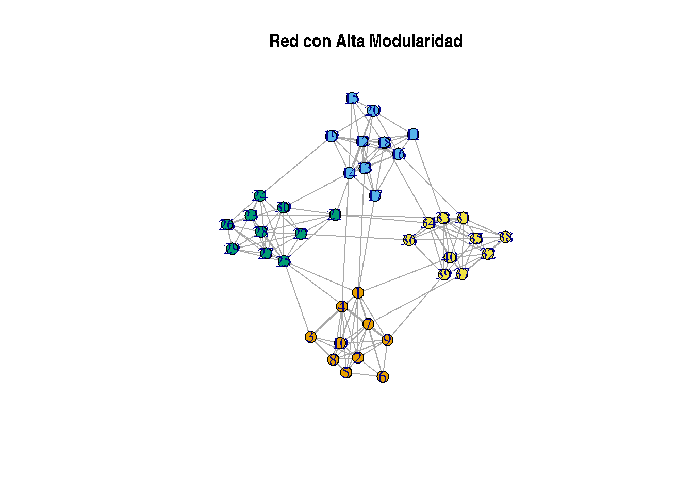
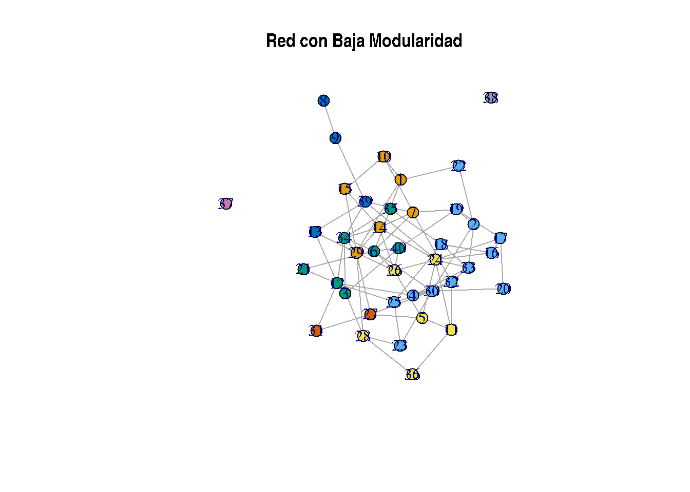
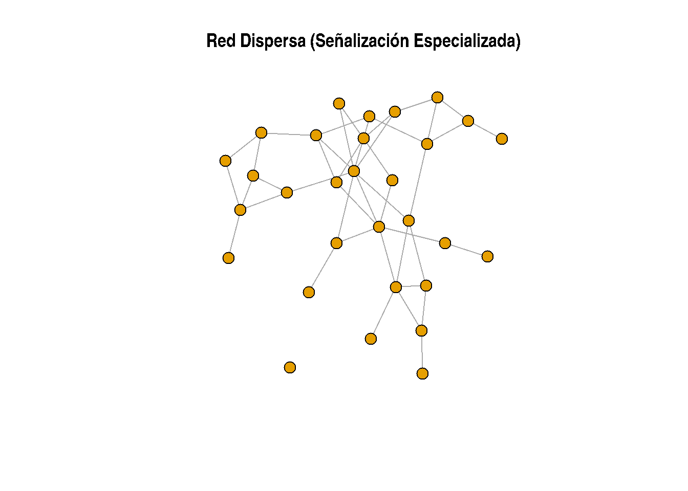
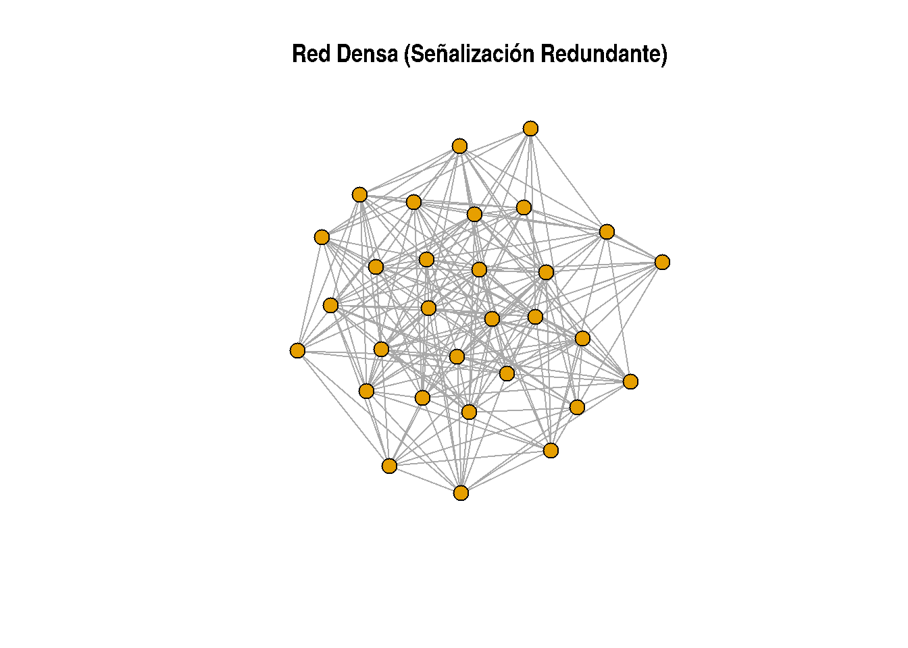
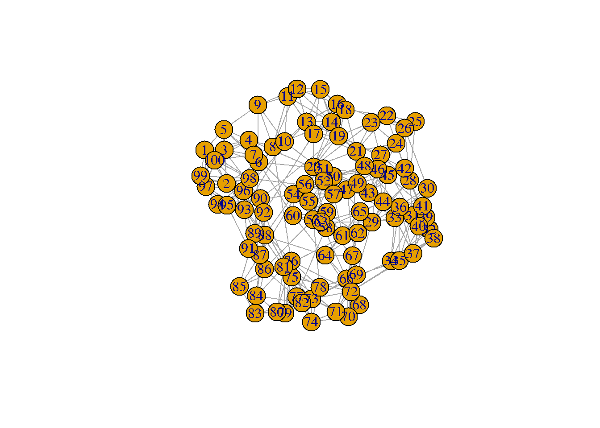
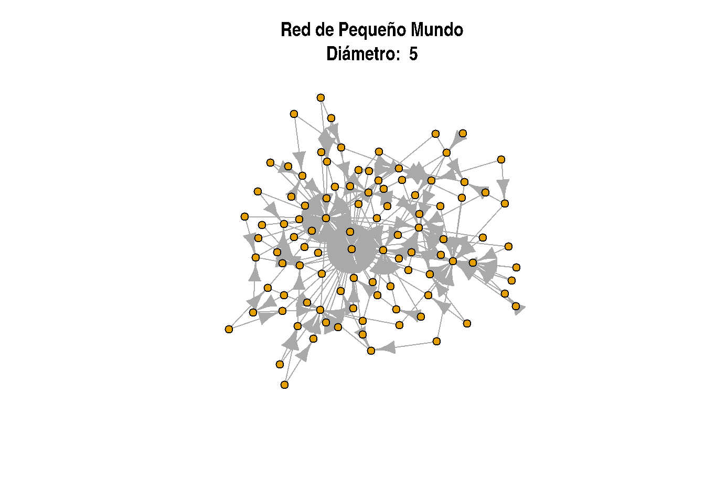
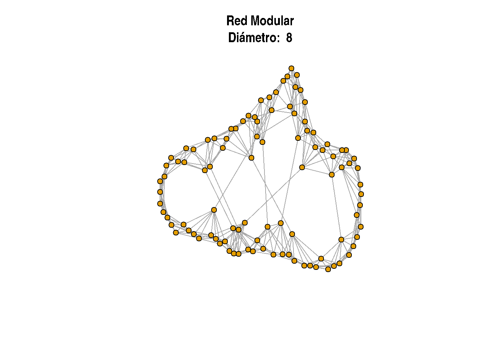

Análisis de Grafos y Topología de Redes (II): Modularidad, Densidad, Longitudes Promedio de Camino, Assortividad
Introducción
Este tutorial es la segunda parte de un análisis detallado de redes aplicado a la biología. En el primer tutorial, exploramos propiedades básicas como el grado (degree), el coeficiente de clustering y algunas métricas de intermediación (betweenness). Estas propiedades nos brindan una comprensión inicial de cómo los nodos y las conexiones en una red contribuyen a su estructura y funcionalidad general.
En esta segunda parte, profundizaremos en métricas avanzadas que describen aspectos estructurales y dinámicos de redes biológicas complejas, como la modularidad, densidad de aristas (edge density), dispersión (sparsity), asortatividad (assortativity), diámetro de la red (network diameter) y longitud promedio de los caminos (average path length). Con ejemplos prácticos en biología y fragmentos de código en R, este tutorial facilita la comprensión de cómo estas propiedades se pueden aplicar para analizar sistemas biológicos, como redes de proteínas y metabolitos, y su resiliencia ante cambios como mutaciones o intervenciones farmacológicas.
Modularidad
La modularidad es una medida clave en el análisis de redes, particularmente útil para identificar comunidades o módulos dentro de una red, es decir, grupos de nodos que están densamente conectados entre sí, pero relativamente poco conectados con otros nodos fuera del grupo. Este concepto es valioso en biología porque muchos sistemas biológicos, como las redes de interacción proteína-proteína (PPI, Protein-Protein Interaction), tienden a organizarse en módulos funcionales. Por ejemplo, en una red de proteínas, las proteínas que funcionan en el mismo proceso biológico tienden a formar módulos o comunidades.
¿Cómo se calcula la modularidad?
La modularidad \(Q\) se calcula para evaluar si una red tiene una estructura modular significativa. La ecuación básica para la modularidad de una red es:
\(A\_{ij}\) representa la entrada en la posición \((i, j)\) de la matriz de adyacencia de la red, donde \(A_{ij} = 1\) si hay una arista entre los nodos \(i\) y \(j\), y \(A_{ij} = 0\) si no la hay.
\(k_i\) es el grado del nodo \(i\) (es decir, el número de conexiones que tiene el nodo \(i\)).
\(\delta(c_i, c_j)\) es una función indicadora que es igual a 1 si los nodos \(i\) y \(j\) pertenecen a la misma comunidad y 0 en caso contrario.
Esta ecuación compara la densidad de enlaces dentro de las comunidades con la densidad esperada de enlaces si las conexiones fueran aleatorias, es decir, si la red se hubiera generado de forma aleatoria manteniendo el mismo grado de cada nodo.
Pasos detallados para calcular la modularidad
Identificar la estructura de la comunidad: La red se divide en comunidades o módulos (grupos de nodos densamente conectados entre sí). Esto puede hacerse con algoritmos específicos como el algoritmo de Louvain o el algoritmo de agrupamiento fast-greedy, que buscan maximizar la modularidad \(Q\) dividiendo la red en comunidades. Veremos mas algoritmos de clusterizacion en la siguiente parte teorica.
Calcular la matriz de adyacencia y el grado: A partir de la estructura de la red, construimos la matriz de adyacencia \(A\) y calculamos el grado de cada nodo \(k_i\).
Sumar las diferencias entre enlaces observados y esperados: Para cada par de nodos \(i\) y \(j\), se calcula \(A_{ij} - \frac{k_i k_j}{2m}\). Este término controla por el grado de los nods \(i\) y \(j\).
Sumar los valores para los pares dentro de la misma comunidad: Los valores obtenidos en el paso anterior se suman únicamente para los pares de nodos \((i, j)\) que están dentro de la misma comunidad (esto lo controla la función \(\delta(c_i, c_j)\)).
Normalizar por el número total de enlaces: Finalmente, el resultado se multiplica por \(\frac{1}{2m}\) para obtener el valor final de modularidad \(Q\).
Un valor de \(Q\) alto indica una fuerte estructura modular, lo que significa que los nodos están agrupados en comunidades bien definidas. En cambio, un valor bajo o cercano a cero sugiere que los enlaces dentro y entre comunidades no difieren mucho de lo que se esperaría en una red aleatoria.
Ejemplo Biológico de Modularidad
En redes de interacción proteína-proteína, la modularidad puede identificar comunidades que corresponden a complejos proteicos funcionales o a proteínas que participan en la misma ruta metabólica. Por ejemplo, en una red de proteínas involucradas en la respuesta inmune, los módulos de alta modularidad pueden corresponder a diferentes mecanismos inmunitarios, como la respuesta inflamatoria o la activación de células T.
Código en R para Calcular Modularidad
El siguiente código en R utiliza igraph para calcular la modularidad en dos redes con diferentes estructuras:
Aquí tienes un ejemplo en R que crea dos redes: una con alta modularidad y otra con baja modularidad. Este código ilustra la diferencia de modularidad usando comunidades claramente definidas para la red modular, mientras que la red no modular tendrá conexiones distribuidas de manera más uniforme sin comunidades definidas.
# Cargamos el paquete igraphlibrary(igraph)
Attaching package: 'igraph'
The following objects are masked from 'package:stats':
decompose, spectrum
The following object is masked from 'package:base':
union
# Creamos una red con alta modularidad utilizando la función sample_islands# Esta red tendrá 4 comunidades internas con enlaces densos entre nodos dentro de cada comunidadset.seed(42)high_modularity_network <-sample_islands(4, 10, 0.8, 3)# Visualizamos la red de alta modularidadplot(high_modularity_network, main ="Red con Alta Modularidad", vertex.color =membership(cluster_louvain(high_modularity_network)), vertex.size =8, edge.arrow.size =0.5)

# Calculamos y mostramos la modularidad de la red de alta modularidadhigh_modularity_value <-modularity(cluster_louvain(high_modularity_network))cat("Modularidad de la red con alta modularidad:", high_modularity_value, "\n")
Modularidad de la red con alta modularidad: 0.6358356
# Creamos una red con baja modularidad usando una red aleatoria sin comunidades definidas# Usamos la función erdos.renyi.game para crear una red aleatorialow_modularity_network <-sample_gnp(40, p =0.1, directed =FALSE)# Visualizamos la red de baja modularidadplot(low_modularity_network, main ="Red con Baja Modularidad", vertex.color =membership(cluster_louvain(low_modularity_network)), vertex.size =8, edge.arrow.size =0.5)

# Calculamos y mostramos la modularidad de la red de baja modularidadlow_modularity_value <-modularity(cluster_louvain(low_modularity_network))cat("Modularidad de la red con baja modularidad:", low_modularity_value, "\n")
Modularidad de la red con baja modularidad: 0.3727328
Explicación del código
Red con alta modularidad:
Creamos una red usando sample_islands que genera “islas” o grupos de nodos con conexiones internas densas y pocas conexiones entre grupos.
Esto produce comunidades internas bien definidas, lo que incrementa el valor de la modularidad.
La función modularity mide este valor, y deberías obtener un valor de modularidad relativamente alto (cerca de 1, dependiendo de los parámetros de entrada).
Red con baja modularidad:
Creamos una red aleatoria con la función sample_gnp, en la cual los enlaces se distribuyen de manera uniforme y no hay comunidades claras.
La modularidad para esta red debería ser baja porque no hay agrupamiento natural en comunidades.
Visualizamos y calculamos la modularidad, la cual debería ser un valor bajo (cercano a cero), indicando una red con baja modularidad.
Interpretación de los Resultados
La red con alta modularidad tendrá nodos dentro de cada comunidad (en este caso, cuatro) con conexiones internas fuertes y escasas conexiones con nodos de otras comunidades. Esto resulta en una modularidad alta, ya que \(A_{ij}\) dentro de las comunidades es significativamente mayor al esperado.
La red con baja modularidad no tendrá comunidades bien definidas. Las conexiones están distribuidas aleatoriamente, por lo que la diferencia entre el número de enlaces reales y el número esperado será baja, dando como resultado una modularidad baja.
Este ejemplo permite ver gráficamente y numéricamente cómo las diferentes configuraciones de enlaces afectan el valor de la modularidad.
Densidad de Aristas (Edge Density) y Dispersión (Sparsity)
La densidad de aristas y la dispersión son métricas que reflejan el grado de conectividad de una red. Estas métricas son clave para entender la eficiencia y organización de sistemas de señalización celular, en donde la comunicación precisa y especializada entre moléculas es esencial para coordinar respuestas celulares.
Densidad de Aristas (Edge Density)
La densidad en una red de señalización indica cuántas interacciones existen en relación con el total de interacciones posibles. En redes biológicas, particularmente en sistemas de señalización celular, la densidad puede influir en cómo se propagan las señales, en la redundancia de la información y en la posibilidad de regulaciones complejas.
Ejemplo en Redes de Señalización: Vía MAPK (Red Densa): La vía de señalización Mitogen-Activated Protein Kinase (MAPK) es un buen ejemplo de una red densa en el contexto de señalización celular. Esta vía está implicada en la respuesta celular a estímulos como factores de crecimiento, citoquinas y estrés, y se caracteriza por varias capas de interacciones en cascada de proteínas quinasa que activan múltiples proteínas aguas abajo. MAPK tiene una alta redundancia y una conectividad extensa, lo cual significa que si una conexión falla, hay rutas alternativas que permiten la continuidad de la señal. Esto permite una señalización robusta y adaptativa, con la capacidad de responder a múltiples estímulos simultáneamente.
Alta Densidad: La red MAPK tiende a ser densa porque las proteínas dentro de esta vía pueden interactuar con múltiples blancos, y existen circuitos de retroalimentación que amplifican o modulan la señal. Esta interconectividad genera una red con muchas aristas en relación al número de nodos, lo que se refleja en un alto valor de densidad. Esta densidad permite a la vía responder de manera efectiva y rápida, esencial en procesos como la división celular, la diferenciación y la respuesta al estrés.
La densidad (\(D\)) se calcula de la siguiente manera:
\[
D = \frac{2m}{n(n-1)}
\]
Donde: - \(D\) es la densidad, - \(m\) es el número de aristas presentes en la red, - \(n\) es el número de nodos.
Dispersión (Sparsity)
La dispersión complementa a la densidad y ayuda a entender la organización de redes dispersas, comunes en sistemas de señalización que requieren alta especificidad. La dispersión se calcula como:
\[
\text{Dispersión} = 1 - D
\]
donde \(D\) es la densidad de aristas. Una red con alta dispersión indica una arquitectura que favorece interacciones específicas y minimiza la redundancia, lo cual es común en redes de señalización de cascadas enzimáticas donde la señal sigue una ruta secuencial, evitando activaciones erróneas.
Ejemplo en Rutas de Señalización:
Vía TGF-beta (Red Dispersa): En contraste al MAPK, la vía de Transforming Growth Factor-beta (TGF-beta) representa una red de señalización más lineal y específica. TGF-beta inicia la señalización mediante la activación de complejos de receptores y la fosforilación de proteínas SMAD, las cuales se translocan al núcleo para regular la transcripción génica. Debido a que esta señalización se desarrolla en un camino relativamente directo, la vía TGF-beta suele tener menos conexiones redundantes entre sus componentes en comparación con MAPK, lo cual resulta en una red con menor densidad.
Baja Densidad (Alta Dispersión): La menor cantidad de interacciones entre nodos en la vía TGF-beta se traduce en una baja densidad de aristas y mayor dispersión. Esto es adecuado para su función de iniciar cambios genéticos específicos sin desencadenar múltiples respuestas o activar rutas cruzadas extensas, permitiendo un control más preciso y limitado. Aunque TGF-beta también puede interactuar con otras vías de señalización, su arquitectura básica suele mostrar menos interconexión y redundancia que MAPK.
Cálculo de Densidad y Dispersión en R
Usaremos código en R para ilustrar cómo estas métricas se aplican a redes con diferentes densidades.
# Cargamos la librería igraphlibrary(igraph)# Creamos una red dispersa para representar una señalización específica y especializadasparse_network <-sample_gnp(30, p =0.1, directed =FALSE)# Creamos una red densa para representar un sistema de señalización redundantedense_network <-sample_gnp(30, p =0.5, directed =FALSE)# Calculamos la densidad de cada redsparse_density <-edge_density(sparse_network)dense_density <-edge_density(dense_network)# Calculamos la dispersiónsparse_sparsity <-1- sparse_densitydense_sparsity <-1- dense_density# Imprimimos los resultadoscat("Densidad de la red dispersa (especialización):", sparse_density, "\n")
Densidad de la red dispersa (especialización): 0.09885057
cat("Densidad de la red densa (redundancia):", dense_density, "\n")
Densidad de la red densa (redundancia): 0.4735632
cat("Dispersión de la red dispersa:", sparse_sparsity, "\n")
Dispersión de la red dispersa: 0.9011494
cat("Dispersión de la red densa:", dense_sparsity, "\n")
Dispersión de la red densa: 0.5264368
# Visualizamos las redesplot(sparse_network, main ="Red Dispersa (Señalización Especializada)", vertex.size =8, vertex.label =NA)

plot(dense_network, main ="Red Densa (Señalización Redundante)", vertex.size =8, vertex.label =NA)

Interpretación del Código
Red Dispersa: Representa un sistema de señalización específico, como la señalización de TGF-beta, donde cada proteína interactúa con un número limitado de proteínas. Esto es ideal para asegurar que la señalización siga una ruta secuencial y específica.
Red Densa: Modela un sistema de señalización con redundancia, como la vía MAPK. En este sistema, existen múltiples rutas alternativas para la propagación de la señal, aumentando la robustez del sistema y asegurando que la célula pueda responder adecuadamente a estímulos críticos.
Aplicaciones de Densidad y Dispersión
Redes de Señalización Celular Complejas: En sistemas como la señalización en células inmunitarias, la densidad puede variar significativamente. Una densidad alta puede ser ventajosa para asegurar respuestas rápidas y fuertes, como en la activación de linfocitos T en respuesta a una infección. Sin embargo, la dispersión alta también puede ser útil para redes que necesitan especificidad y precisión, como en la regulación de citocinas, donde una señalización muy dispersa evita que células no implicadas respondan erróneamente.
Optimización de Fármacos Basada en la Estructura de la Red: Las redes densas pueden ofrecer múltiples puntos de intervención farmacológica debido a su redundancia, pero también presentan el desafío de efectos secundarios no deseados. En contraste, redes dispersas ofrecen objetivos específicos, aunque los efectos de los fármacos pueden depender de la precisión con la que se interrumpe una señal en particular.
Longitudes Promedio de Camino en Redes
Entendiendo la Longitud Promedio de Camino
La longitud promedio de camino en una red se define como el número promedio de pasos a lo largo de los caminos más cortos para todos los pares de nodos en la red. Es una medida importante de la propiedad de “pequeño mundo” de una red. En redes biológicas, las longitudes promedio de camino cortas suelen indicar una red altamente conectada y eficiente, mientras que las longitudes largas pueden sugerir redes más modulares o segregadas.
Matemáticamente, la longitud promedio de camino \(L_{avg}\) para un grafo no dirigido se calcula como:
donde \(d(i,j)\) es el camino más corto entre los nodos \(i\) y \(j\), y \(N\) es el número total de nodos en la red.
Redes con Longitudes Promedio de Camino Cortas (Redes de Pequeño Mundo)
Las redes de pequeño mundo tienen la característica de una longitud promedio de camino corta, lo que significa que, a pesar del tamaño de la red, cualquier par de nodos puede ser alcanzado en solo unos pocos pasos. Estas redes son comunes en sistemas biológicos y redes sociales, donde los nodos están altamente interconectados.
Ejemplo: Redes de Interacción Proteína-Proteína (PPI)
En las redes de interacción proteína-proteína (PPI), las proteínas son los nodos y las interacciones entre ellas son los bordes. La longitud promedio de camino en una red PPI bien conectada puede ser bastante corta, lo que refleja el alto grado de interconexión entre proteínas en procesos biológicos clave.
Ejemplo de Código en R: Aquí tienes un fragmento de código en R que genera una red de pequeño mundo y calcula la longitud promedio de camino.
# Cargar las bibliotecas necesariaslibrary(igraph)# Crear una red de pequeño mundosmall_world_net <-sample_pa(100, m=2) # Adquisición preferencial, genera propiedades de pequeño mundoplot(small_world_net)
# Calcular la longitud promedio de caminoaverage_path_length <-mean_distance(small_world_net)average_path_length
[1] 1.842884
Ejemplo: Redes de Regulación Génica
En las redes de regulación génica, donde los genes son los nodos y las interacciones regulatorias entre ellos son los bordes, una longitud promedio de camino corta puede indicar que los genes se están regulando de manera eficiente entre sí, a menudo debido a factores de transcripción compartidos o mecanismos co-regulatorios.
Ejemplo Fuera de la Biología: Redes Sociales
En las redes sociales, donde las personas son los nodos y las interacciones sociales son los bordes, las longitudes promedio de camino son a menudo cortas. Por ejemplo, en el famoso experimento de “seis grados de separación”, se descubrió que las personas están generalmente conectadas por un promedio de solo 6 grados de separación.
Redes con Longitudes Promedio de Camino Largas (Redes Modulares)
Por otro lado, las redes con longitudes promedio de camino largas suelen exhibir una estructura modular o jerárquica, donde los clústeres de nodos altamente conectados (módulos) solo están débilmente conectados entre sí. Estas redes suelen ser menos eficientes en cuanto a la transferencia de información.
Ejemplo Biológico 1: Redes Cerebrales
En las redes cerebrales, donde las regiones del cerebro son los nodos y las conexiones funcionales o anatómicas entre ellas son los bordes, la red podria hipotéticamente tener una longitud promedio de camino más larga. La estructura modular del cerebro, con regiones distintas para funciones cognitivas diferentes, contribuye a una mayor longitud de camino entre regiones distantes.
Ejemplo de Código en R: Aquí tienes un ejemplo de cómo generar una red modular y calcular su longitud promedio de camino.
# Generar una red modular (utilizando el modelo de Watts-Strogatz para redes de pequeño mundo)modular_net <-sample_smallworld(1, 100, 4, 0.07) # Probabilidad de reconfiguración bajaplot(modular_net)

# Calcular la longitud promedio de caminoaverage_path_length_modular <-mean_distance(modular_net)average_path_length_modular
[1] 2.863232
Ejemplo Biológico 2: Redes Ecológicas
En las redes ecológicas (como las redes tróficas), donde las especies son los nodos y las relaciones de alimentación son los bordes, la red suele tener una longitud promedio de camino más larga. Las especies a menudo se agrupan en grupos funcionales, y las interacciones dentro de estos grupos son mucho más frecuentes que las interacciones entre grupos.
Ejemplo Fuera de la Biología: Red de Internet
En la topología física de Internet, donde los routers y servidores son los nodos, la red puede exhibir una longitud promedio de camino más larga. A pesar de la vasta cantidad de conexiones, la red suele estar organizada de manera modular, donde diferentes regiones o subredes están más conectadas entre sí, lo que lleva a caminos más largos entre nodos distantes.
La longitud promedio de camino es una característica fundamental de las redes que puede revelar propiedades estructurales importantes. Las longitudes promedio de camino cortas sugieren un sistema eficiente y conectado, mientras que las largas indican una estructura más modular o jerárquica. Comprender cómo funciona la longitud promedio de camino en redes biológicas y no biológicas puede proporcionar valiosos conocimientos sobre su dinámica, conectividad y robustez.
Diámetro (Diameter)
El diámetro de una red es la longitud del camino más corto entre nodos mas largo entre cualquier par de nodos en la red. Es decir, el diámetro es el valor máximo de las distancias más cortas \(d(i,j)\) entre nodos \(i\) y \(j\). Esta medida es importante porque da una idea de cuán “extendida” o “compacta” es la red en términos de conectividad.
El diámetro \(D\) de una red se calcula como:
\[
D = \max_{i \neq j} d(i,j)
\]
donde \(d(i,j)\) es la distancia más corta entre los nodos \(i\) y \(j\).
Relación entre Longitud Promedio de Camino y Diámetro
Redes con Longitud Promedio de Camino Corta (Pequeño Mundo): En redes de pequeño mundo, el diámetro suele ser relativamente pequeño debido a la alta conectividad, lo que permite que cualquier par de nodos esté cerca el uno del otro.
Redes con Longitud Promedio de Camino Larga (Modulares): En redes modulares, el diámetro suele ser más largo, ya que los nodos dentro de un módulo están bien conectados, pero los módulos en sí mismos tienen una menor conectividad, lo que aumenta la distancia entre nodos de diferentes módulos.
six degrees of Kevin Bacon
Cálculo del Diámetro en Redes de R
Aquí te muestro cómo calcular el diámetro de la red utilizando R, tanto para redes de pequeño mundo como para redes modulares.
library(igraph)# Generar una red de pequeño mundo (preferential attachment) con 100 nodos y 2 conexiones por nodosmall_world_net <-sample_pa(100, m =2)# Calcular el diámetro de la red de pequeño mundodiameter_small_world <-diameter(small_world_net)cat("Diámetro de la red de pequeño mundo: ", diameter_small_world, "\n")
Diámetro de la red de pequeño mundo: 5
# Generar una red modular (modelo de Watts-Strogatz) con 100 nodos, 4 vecinos por nodo, y probabilidad de reconexión baja (0.01)modular_net <-sample_smallworld(1, 100, 4, 0.01)# Calcular el diámetro de la red modulardiameter_modular <-diameter(modular_net)cat("Diámetro de la red modular: ", diameter_modular, "\n")
Diámetro de la red modular: 8
# Graficar ambas redesplot(small_world_net, main =paste("Red de Pequeño Mundo\nDiámetro: ", diameter_small_world), vertex.size =5, vertex.label =NA)

plot(modular_net, main =paste("Red Modular\nDiámetro: ", diameter_modular), vertex.size =5, vertex.label =NA)

Relación entre Diámetro y Propiedades de Red
Redes de Pequeño Mundo: Las redes de pequeño mundo tienen un diámetro bajo, lo que significa que las distancias más largas entre los nodos son pequeñas, lo que las hace más eficientes en términos de conectividad.
Redes Modulares: Las redes modulares tienen un diámetro mayor porque los módulos son menos interdependientes, lo que genera distancias más largas entre nodos de diferentes módulos.
Asortatividad de Grado (Degree Assortativity)
Definiciones
Asortatividad de Grado (Degree Assortativity): Mide la tendencia de los nodos a conectarse con otros nodos de grado similar.
# Number of nodes (high assortativity)set.seed(123)n_nodes <-25# Create a random degree sequence where high-degree nodes have higher probability of being connecteddegree_sequence <-sample(1:20, n_nodes, replace =TRUE)# Create an empty list for storing edgesedges <-list()# Create an assortative network by manually connecting nodes with similar degreesfor (i in1:(n_nodes -1)) {for (j in (i +1):n_nodes) {# Only create an edge if degrees are similar (within a certain range)if (abs(degree_sequence[i] - degree_sequence[j]) <=2) { edges <-append(edges, list(c(i, j))) } }}# Create the final graph with the new edgesg_assortative <-graph_from_edgelist(do.call(rbind, edges), directed =FALSE)# Calculate assortativity based on degreeassortativity_coeff <-assortativity_degree(g_assortative)cat("Assortativity coefficient:", assortativity_coeff, "\n")
Assortativity coefficient: 0.5272915
# Plot the networkplot(g_assortative, main =paste("Random Network with High Assortativity\nAssortativity: ", round(assortativity_coeff, 3)), vertex.size =10, vertex.label =NA, edge.arrow.size =0.5)
# Create a random graph with low assortativity using Erdős–Rényi modellow_assortativity_net <-sample_gnp(n = n_nodes, p =0.2, directed =FALSE)# Calculate the assortativity based on degreeassortativity_coeff <-assortativity_degree(low_assortativity_net)cat("Assortativity coefficient (should be low):", assortativity_coeff, "\n")
Assortativity coefficient (should be low): -0.1471013
# Plot the networkplot(low_assortativity_net, main =paste("Random Network with Low Assortativity\nAssortativity: ", round(assortativity_coeff, 3)), vertex.size =15, vertex.label =NA, edge.arrow.size =0.5)
Ejemplos de Redes con Asortatividad Positiva y Negativa
Asortatividad Positiva
En redes con asortatividad positiva, los nodos con grados similares tienden a conectarse entre sí. Este patrón fomenta la formación de comunidades o módulos, lo que refuerza la resiliencia y la cohesión de la red.
Redes de Interacción Proteína-Proteína (PPI):
Puede que hay asortatividad positiva en ciertas ocasiones, por ejemplo en la maquinaria ribosomal, las proteínas ribosómicas suelen agruparse y tienden a tener muchas conexiones entre ellos, para garantizar una síntesis proteica eficiente.
Redes Sociales:
En redes como LinkedIn, las personas con muchas conexiones suelen estar vinculadas a otros usuarios con un número similar de contactos, lo que genera grupos profesionales densamente interconectados.
Asortatividad Negativa
En redes con asortatividad negativa, los nodos de alto grado tienden a conectarse con nodos de bajo grado. Este patrón es típico de sistemas diseñados para maximizar la eficiencia y la transferencia de recursos o información.
Redes Metabólicas:
Los metabolitos universales, como el ATP, actúan como hubs al conectar múltiples metabolitos específicos con roles clave en diversas rutas metabólicas. Este diseño asegura que el ATP pueda participar rápidamente en numerosas reacciones bioquímicas.
Redes de Transporte:
En redes aéreas, los aeropuertos internacionales (hubs) están conectados con aeropuertos regionales más pequeños. Esto optimiza el flujo de pasajeros y carga en el sistema global.
Comparación en Biología
La asortatividad positiva refuerza la estabilidad dentro de módulos funcionales, como complejos proteicos específicos.
La asortatividad negativa mejora la flexibilidad y la integración en sistemas jerárquicos, como en la regulación metabólica o genética.
Ambos patrones reflejan estrategias de diseño adaptativas que optimizan la funcionalidad en redes biológicas y tecnológicas.
Ejercicio
Aplicar conceptos de modularidad, densidad de aristas, dispersión, longitud promedio de camino y asortatividad de grado para analizar la estructura y funcionalidad de redes biológicas utilizando R y la librería igraph.
Instrucciones
Parte 1: Creacion y visulalizacion
Crea dos redes en R:
Una red modular, con comunidades internas densas (sample_islands).
Una red aleatoria, sin comunidades claras (sample_gnp).
Visualiza ambas redes y describe las diferencias visuales:
Conectividad
Agrupamiento
Presencia de comunidades
¿Qué diferencias visuales observas entre ambas redes en términos de conectividad y agrupamiento?
Parte 2: Cálculo de Métricas Topológicas
Calcula las siguientes métricas para ambas redes:
Propiedad
Función en R
Significado
Modularidad
modularity(cluster_louvain(red))
Evalúa la existencia de comunidades
Densidad
edge_density(red)
Proporción de conexiones existentes
Dispersión
1 - edge_density(red)
Grado de especificidad
Longitud promedio de camino
mean_distance(red)
Eficiencia en la comunicación
Diámetro
diameter(red)
Máxima distancia entre nodos
Asortatividad
assortativity_degree(red)
Tendencia de nodos similares a conectarse
Representa los resultados como una table (data.frame) para comparar valores entre redes.